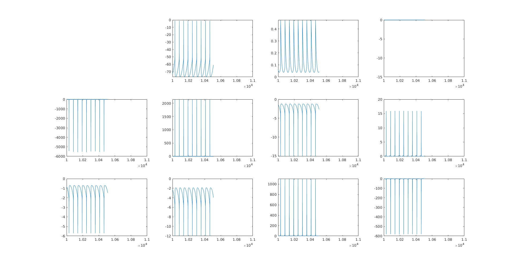
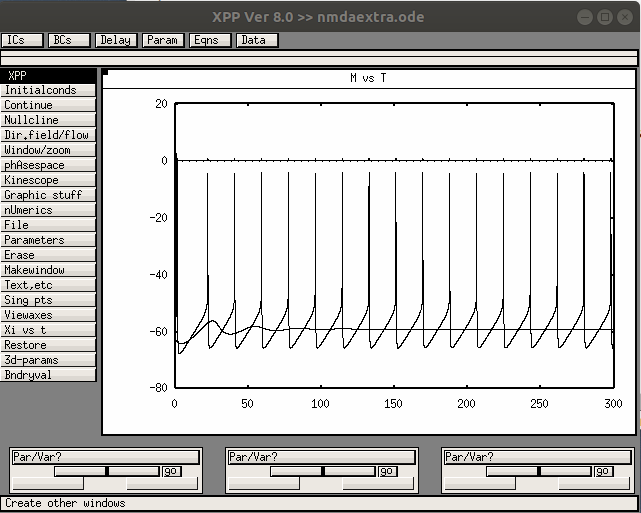

This is the readme for Fortran and xpp code associated with the paper:
Gall D, Dupont G (2019) Tonic Activation of Extrasynaptic NMDA
Receptors Decreases Intrinsic Excitability and Promotes Bistability in
a Model of Neuronal Activity. Int J Mol Sci 2020 21, 206
doi:10.3390/ijms2101020
This code was contributed by David Gall. This is "compatible" fortran so it will probably run on whatever fortran. compiler you have.
To run the model on ubuntu you can install a free fortran compiler with a command like:
sudo apt install gfortran
Compile and run with commands like:
gfortran -o alz5v.exe alz5v.f
./alz5v.exe
It takes under half a minute to run and generates some data files which you can plot in matlab with these example commands
load fort.18 figure for f=2:12 subplot(3,4,f) plot(fort(:,1),fort(:,f)) ax=axis() axis([10000 11000 ax(3) ax(4)]) end ---
An xpp (xppaut) file, nmdaextra.ode, is also included. After starting you can add a Voltage plot by selecting V vs T under the "Graphic stuff" menu and then under Parameters change the Iinj current injection to a larger value like -10 you can see APs generated by the model (you can select InitialConds -> Go and Continue to 300):
